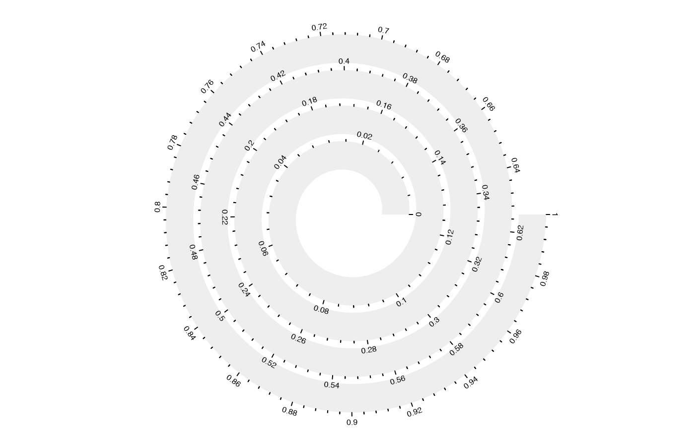
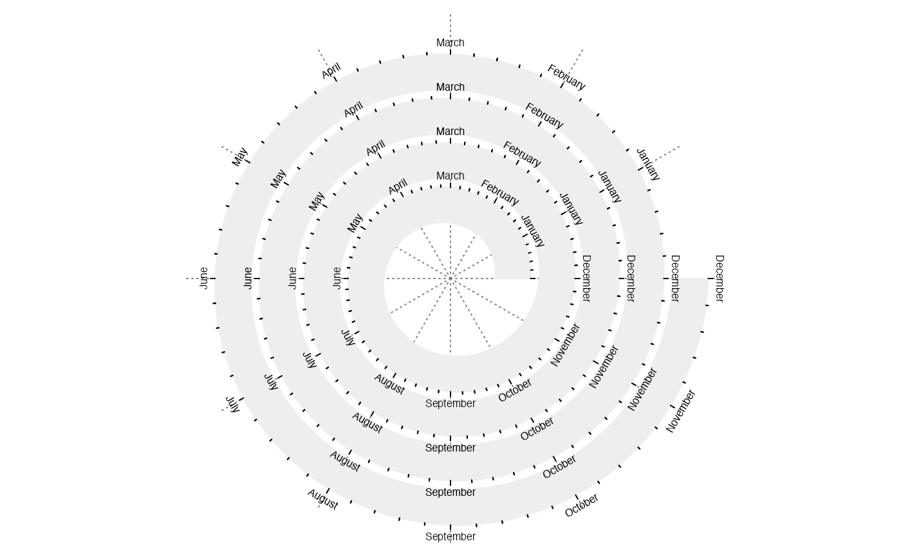

spiral_axis.RdDraw axis along the spiral
spiral_axis(h = c("top", "bottom"), at = NULL, major_at = at, labels = TRUE, curved_labels = FALSE, minor_ticks = 4, major_ticks_length = unit(4, "bigpts"), minor_ticks_length = unit(2, "bigpts"), ticks_gp = gpar(), labels_gp = gpar(fontsize = 6), track_index = current_track_index())
| h | Position of the axis. The value can be a character of "top" or "bottom". |
|---|---|
| at | Breaks points on axis. |
| major_at | Breaks points on axis. It is the same as |
| labels | The corresponding labels for the break points. |
| curved_labels | Whether are the labels are curved? |
| minor_ticks | Number of minor ticks. |
| major_ticks_length | Length of the major ticks. The value should be a |
| minor_ticks_length | Length of the minor ticks. The value should be a |
| ticks_gp | Graphics parameters for the ticks. |
| labels_gp | Graphics parameters for the labels. |
| track_index | Index of the track. |
spiral_axis()# if the spiral is intepolated by the curve length spiral_initialize(scale_by = "curve_length"); spiral_track()spiral_axis()